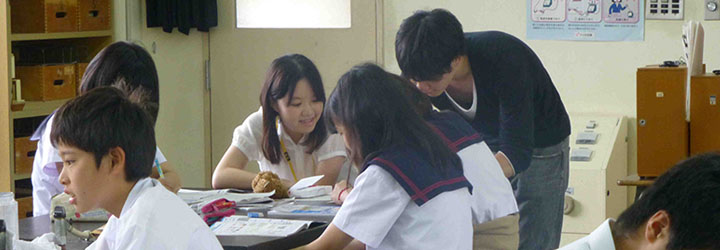

地域支援本部

卒業生やPTA・OGOBや地域住民のみなさんが主体となる学校支援の組織です。
ほそごう学園をOurSchool（私たちの学校）と思っていただける方のお力を少しお貸しいただければありがたいです。
地域支援本部の主な取り組み
学校教育の充実、生涯学習社会の実現、地域の教育力の向上につながる取り組みをおこなっています。
活動の概要
- 目的
- 学校・家庭・地域が一体となって地域ぐるみで子どもを育てる体制を整えることを目的としています。
- 主な活動
- 土曜日を中心として、クラブ活動のサポートや補助学習の機会を提供していきます。
- 期待される効果
- 地域住民と学校の垣根をなくし、地域活性化への貢献が期待できます。
- 募集
- 学校および地域に貢献したい方を募集しております。ご興味のある方はほそごう学園までご連絡ください。
これまでの取り組み
- 早朝英語および国語塾を開講
- 主に高校受験をむかえる3年生を中心に学習のお手伝いをすることで、地域の学生の学習向上に寄与しました。
また、これ以外にも不定期ではありますが、学生、学校、地域住民を交えた親睦会などの活動を行いました。